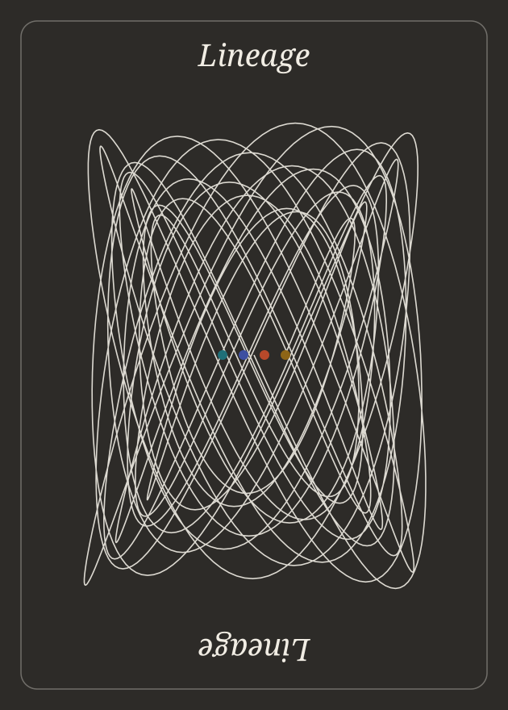

Fifty-two minds.
One unbroken line.
Every card in Lineage is a portrait drawn without lifting the pen. The line leaves the person, becomes their idea, and runs on toward the artificial intelligence we use today.

The person
A single line traces the portrait. Heavier strokes sit in shadow, hairlines show where the pen travelled.
The idea
Without a break, the line becomes their contribution, drawn precisely: a wave, a curve, a graph, a proof.
The line to AI
Then it runs to the horizon in the suit's colour, ending at the piece of modern AI that grew from it.
Nobody builds alone.
Today's AI did not appear from nowhere. Large language models run on Turing's universal machine, learn with Leibniz's chain rule and Gauss's least squares, predict the next word the way Markov counted letters in a poem, and run on chips descended from Kilby's integrated circuit.
Lineage makes that inheritance visible. Each portrait is drawn as one continuous line that flows into the person's idea and then onward, so the whole deck reads like a family tree of thought.
The line drawings take their lead from Matisse, Klee, Schiele, Al Hirschfeld, Alewya, Tyler Foust and Shantell Martin. The precise, moving diagrams of ideas owe a debt to 3Blue1Brown. The quiet palette and the invitation to remix come from Rick Rubin's The Way of Code.
Ranks run by impact within each suit, from Ace down to 2. Impact is a judgement, not a fact, and that is a good argument to have in class.
Science
The people who asked how nature works and proved it, from light and gravity to neurons and genes.


Technology
The people who taught machines to compute, communicate and, eventually, to learn.


Engineering
The people who built the engines, chips and networks that everything else runs on.


Mathematics
The people who found the patterns underneath: algorithms, probability, symmetry and proof.


Wild cards
Brilliant, influential and divisive. Wild cards play by their own rules.


The same line, every time.
The back is a single curve that never lifts: a slowly turning Lissajous figure, the shape traced when two waves meet. It reads the same both ways up. The four dots are the suit colours.
Each portrait starts from a photograph. Code finds the features that matter, keeps fine detail in the face and only bold gestures elsewhere, then routes the pen between strokes along lines it has already drawn, so the drawing is one continuous path.
Line weight follows the photo's shadows, and zig-zag hatching in the darkest areas is part of the same line. The generator lives in the tools folder of this project.
Every card page is live: the portrait draws itself, then flows into an interactive drawing of that person's own work that you can remix, with the code beside it. Portraits are generated from public-domain or Creative Commons photographs and are being refined card by card.